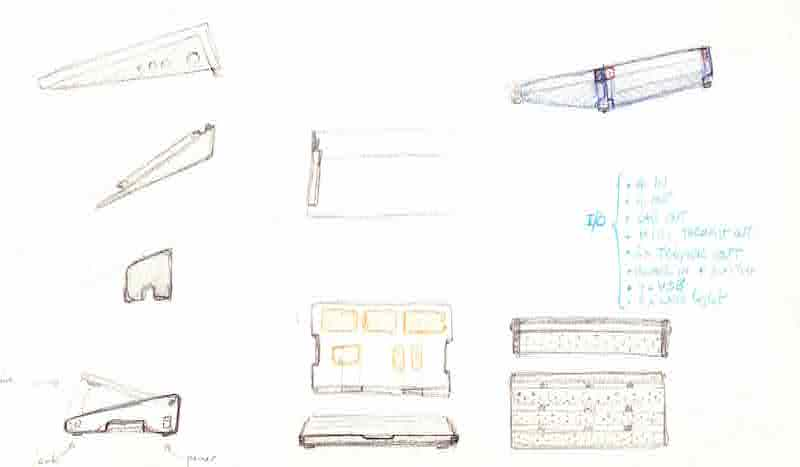
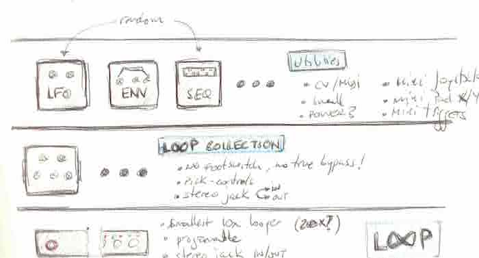
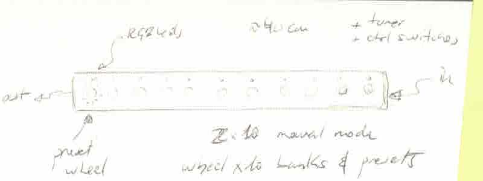

<!DOCTYPE html>
<html lang="en"></html>
<head>
  <meta charset="utf-8">
  <meta content="IE=edge" http-equiv="X-UA-Compatible">
  <meta content="width=device-width, initial-scale=1" name="viewport">
  <title> Rafael Rebolleda — Fab Academy 2020 Documentation</title>
  <!-- Google Fonts-->
  <link rel="stylesheet" href="https://fonts.googleapis.com/css?family=Catamaran&amp;display=swap">
  <link rel="stylesheet" href="css/main.css">
</head>
<body> 
  <nav>
    <header>
      <ul>
        <li>Rafael Rebolleda</li>
        <li>ESNE + LEON</li>
        <li>Madrid, Spain</li>
      </ul>
      <p class="bio">Human Centric Research & Innovation consultant and professor. Also looking for PhD opportunities!</p>
    </header>
    <ol>
      <li>About me</li>
      <li>Principles</li>
      <li>Project Management</li>
    </ol>
  </nav>
  <main>
    <h1>About Me</h1>
    <p>Hi there and thanks for dropping by :)</p>
    <p>Really quick (for now):</p>
    <ul>
      <li>Currently: Indepdent consultant + University professor in User Experience</li>
      <li>MBA in Digital Transformation + Masters in Strategic Knowledge Management</li>
      <li>BA in Multimedia</li>
      <li>20+ years of experience in Innovation, designing digital products and services with international reac</li>
      <li>Startups, corporations, agencies and consultin</li>
    </ul>
    <h2>Background</h2>
    <p>I've already done a few projects in what I would call <i>crafmanship prototyping</i>. I guess it's just a fancy way of saying hacking a few ideas together with whichever means available and a good deal of good old sweat.</p>
    <p>Here's the modification and installation of one pick-up per string:</p>
    <p>In this case, I installed an arduino-based MIDI controller:</p>
    <p>This is a full guitar hand-made from scratch:</p>
    <h2>Approach</h2>
    <p>I approach Fab Academy as a means to <b>prototype as many ideas as I can around around the theme presented above.</b>, as well as aqcuiring new skills to flesh them out beyond the notebook.</p>
    <p>To that extent, I foresee the final project taking shape as we advance through the program and I see how the learnings can be applied to my interests, by then doing self-contained micro-projects for each assignment. It's a somewhat similar approach to the one described in picture below (don't know who to credit it to!)</p>
    <p>Similar to the process described above, there's an underlying theme that connects all products, but these are actually all different, not necessarily part of a bigger project.</p>
    <h1>Final project ideas</h1>
    <p>I have a number of ideas around the <b>creation and manipulation of music: instruments, effects (re-parametrizers, as a good friend liked to call them :), accesories and devices in general that enable new ways of approaching music composition and performance.</b></p>
    <p>In particular, I'm interested in moving forward the <b>expresiveness</b> available to the performer in now-classic instruments, like electric guitars, which haven't really changed much since their original concept, as well as <b>bringing HCD and HCI approaches</b> to the design and development of <b>modern computational musical devices</b>.</p></p><p>Moreover, I'm particularly interested in moving my skills <b>from one-off, handmade products to semi-industrial, machine-made products</b>. I find that some of my ideas require a precision that is hard to achieve and/or replicate by hand</p>
  </main>
</body>